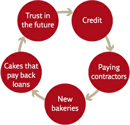

James Cook was not the rst explorer to think this way. The Portuguese and Spanish voyagers of the fteenth and sixteenth centuries already did. Prince Henry the Navigator and Vasco da Gama explored the coasts of Africa and, while doing so, seized control of islands and harbours. Christopher Columbus
‘discovered’ America and immediately claimed sovereignty over the new lands for the kings of Spain. Ferdinand Magellan found a way around the world, and simultaneously laid the foundation for the Spanish conquest of the Philippines.
As time went by, the conquest of knowledge and the conquest of territory became ever more tightly intertwined. In the eighteenth and nineteenth centuries, almost every important military expedition that left Europe for distant lands had on board scientists who set out not to ght but to make scienti c discoveries.
When Napoleon invaded Egypt in 1798, he took 165 scholars with him. Among other things, they founded an entirely new discipline, Egyptology, and made important contributions to the study of religion, linguistics and botany.
In 1831, the Royal Navy sent the ship HMS Beagle to map the coasts of South America, the Falklands Islands and the Galapagos Islands. The navy needed this knowledge in order to be better prepared in the event of war. The ship’s captain, who was an amateur scientist, decided to add a geologist to the expedition to
study geological formations they might encounter on the way. After several professional geologists refused his invitation, the captain o ered the job to a twenty-two-year-old Cambridge graduate, Charles Darwin. Darwin had studied to become an Anglican parson but was far more interested in geology and natural sciences than in the Bible. He jumped at the opportunity, and the rest is history.
The captain spent his time on the voyage drawing military maps while Darwin collected the empirical data and formulated the insights that would eventually become the theory of evolution.
On 20 July 1969, Neil Armstrong and Buzz Aldrin landed on the surface of the moon. In the months leading up to their expedition, the Apol o 11 astronauts trained in a remote moon-like desert in the western United States. The area is home to several Native American communities, and there is a story – or legend –
describing an encounter between the astronauts and one of the locals.
One day as they were training, the astronauts came across an old Native American. The man asked them what they were doing there. They replied that they were part of a research expedition that would shortly travel to explore the moon. When the old man heard that, he fell silent for a few moments, and then asked the astronauts if they could do him a favour.
‘What do you want?’ they asked.
‘Well,’ said the old man, ‘the people of my tribe believe that holy spirits live on the moon. I was wondering if you could pass an important message to them from my people.’
‘What’s the message?’ asked the astronauts.
The man uttered something in his tribal language, and then asked the astronauts to repeat it again and again until they had memorised it correctly.
‘What does it mean?’ asked the astronauts.
‘Oh, I cannot tell you. It’s a secret that only our tribe and the moon spirits are allowed to know.’
When they returned to their base, the astronauts searched and searched until they found someone who could speak the tribal language, and asked him to translate the secret message. When they repeated what they had memorised, the translator started to laugh uproariously. When he calmed down, the astronauts asked him what it meant. The man explained that the sentence they had memorised so carefully said, ‘Don’t believe a single word these people are telling you. They have come to steal your lands.’
Empty Maps
The modern ‘explore and conquer’ mentality is nicely illustrated by the development of world maps. Many cultures drew world maps long before the modern age. Obviously, none of them really knew the whole of the world. No Afro-Asian culture knew about America, and no American culture knew about Afro-Asia. But unfamiliar areas were simply left out, or lled with imaginary monsters and wonders. These maps had no empty spaces. They gave the impression of a familiarity with the entire world.
During the fteenth and sixteenth centuries, Europeans began to draw world maps with lots of empty spaces – one indication of the development of the scienti c mindset, as well as of the European imperial drive. The empty maps were a psychological and ideological breakthrough, a clear admission that Europeans were ignorant of large parts of the world.
The crucial turning point came in 1492, when Christopher Columbus sailed westward from Spain, seeking a new route to East Asia. Columbus still believed in the old ‘complete’ world maps. Using them, Columbus calculated that Japan should have been located about 7,000 kilometres west of Spain. In fact, more than 20,000 kilometres and an entire unknown continent separate East Asia from Spain. On 12 October 1492, at about 2:00 a.m., Columbus’ expedition collided with the unknown continent. Juan Rodriguez Bermejo, watching from the mast of the ship Pinta, spotted an island in what we now call the Bahamas, and shouted
‘Land! Land!’
Columbus believed he had reached a small island o the East Asian coast. He called the people he found there ‘Indians’ because he thought he had landed in the Indies – what we now call the East Indies or the Indonesian archipelago.
Columbus stuck to this error for the rest of his life. The idea that he had discovered a completely unknown continent was inconceivable for him and for many of his generation. For thousands of years, not only the greatest thinkers and scholars but also the infallible Scriptures had known only Europe, Africa and Asia. Could they all have been wrong? Could the Bible have missed half the world? It would be as if in 1969, on its way to the moon, Apol o 11 had crashed into a hitherto unknown moon circling the earth, which all previous observations had somehow failed to spot. In his refusal to admit ignorance, Columbus was still a medieval man. He was convinced he knew the whole world, and even his momentous discovery failed to convince him otherwise.
36. A European world map from 1459 (Europe is in the top left corner). The map is filled with details, even when depicting areas that were completely unfamiliar to Europeans, such as southern Africa.
The rst modern man was Amerigo Vespucci, an Italian sailor who took part in several expeditions to America in the years 1499–1504. Between 1502 and 1504, two texts describing these expeditions were published in Europe. They were attributed to Vespucci. These texts argued that the new lands discovered by Columbus were not islands o the East Asian coast, but rather an entire continent unknown to the Scriptures, classical geographers and contemporary Europeans. In 1507, convinced by these arguments, a respected mapmaker named Martin Waldseemüller published an updated world map, the rst to show the place where Europe’s westward-sailing eets had landed as a separate continent. Having drawn it, Waldseemüller had to give it a name. Erroneously believing that Amerigo Vespucci had been the person who discovered it, Waldseemüller named the continent in his honour – America. The Waldseemüller map became very popular and was copied by many other cartographers, spreading the name he had given the new land. There is poetic justice in the fact that a quarter of the world, and two of its seven continents, are named after a little-known Italian whose sole
claim to fame is that he had the courage to say, ‘We don’t know.’
The discovery of America was the foundational event of the Scienti c Revolution. It not only taught Europeans to favour present observations over past traditions, but the desire to conquer America also obliged Europeans to search for new knowledge at breakneck speed. If they really wanted to control the vast new territories, they had to gather enormous amounts of new data about the geography, climate, ora, fauna, languages, cultures and history of the new continent. Christian Scriptures, old geography books and ancient oral traditions were of little help.
Henceforth not only European geographers, but European scholars in almost all other elds of knowledge began to draw maps with spaces left to ll in. They began to admit that their theories were not perfect and that there were important things that they did not know.
The Europeans were drawn to the blank spots on the map as if they were magnets, and promptly started lling them in. During the fteenth and sixteenth centuries, European expeditions circumnavigated Africa, explored America, crossed the Paci c and Indian Oceans, and created a network of bases and colonies all over the world. They established the rst truly global empires and knitted together the rst global trade network. The European imperial expeditions transformed the history of the world: from being a series of histories of isolated peoples and cultures, it became the history of a single integrated human society.
37. The Salviati World Map, 1525. While the 1459 world map is full of continents, islands and detailed explanations, the Salviati map is mostly empty. The eye wanders south along the American coastline, until it peters into emptiness. Anyone looking at the map and possessing even minimal curiosity is tempted to ask, ‘What’s beyond this point?’ The map gives no answers. It invites the observer to set sail and find out.
These European explore-and-conquer expeditions are so familiar to us that we tend to overlook just how extraordinary they were. Nothing like them had ever happened before. Long-distance campaigns of conquest are not a natural undertaking. Throughout history most human societies were so busy with local con icts and neighbourhood quarrels that they never considered exploring and conquering distant lands. Most great empires extended their control only over their immediate neighbourhood – they reached far- ung lands simply because their neighbourhood kept expanding. Thus the Romans conquered Etruria in order to defend Rome ( c.350–300 BC). They then conquered the Po Valley in order to defend Etruria ( c.200 BC). They subsequently conquered Provence to defend the Po Valley ( c.120 BC), Gaul to defend Provence ( c.50 BC), and Britain in order to defend Gaul ( c. AD 50). It took them 400 years to get from Rome to London. In 350 BC, no Roman would have conceived of sailing directly to Britain and conquering it.
Occasionally an ambitious ruler or adventurer would embark on a long-range
campaign of conquest, but such campaigns usually followed well-beaten imperial or commercial paths. The campaigns of Alexander the Great, for example, did not result in the establishment of a new empire, but rather in the usurpation of an existing empire – that of the Persians. The closest precedents to the modern European empires were the ancient naval empires of Athens and Carthage, and the medieval naval empire of Majapahit, which held sway over much of Indonesia in the fourteenth century. Yet even these empires rarely ventured into unknown seas – their naval exploits were local undertakings when compared to the global ventures of the modern Europeans.
Many scholars argue that the voyages of Admiral Zheng He of the Chinese Ming dynasty heralded and eclipsed the European voyages of discovery. Between 1405
and 1433, Zheng led seven huge armadas from China to the far reaches of the Indian Ocean. The largest of these comprised almost 300 ships and carried close to 30,000 people. 7 They visited Indonesia, Sri Lanka, India, the Persian Gulf, the Red Sea and East Africa. Chinese ships anchored in Jedda, the main harbour of the Hejaz, and in Malindi, on the Kenyan coast. Columbus’ eet of 1492 – which consisted of three small ships manned by 120 sailors – was like a trio of mosquitoes compared to Zheng He’s drove of dragons. 8
Yet there was a crucial di erence. Zheng He explored the oceans, and assisted pro-Chinese rulers, but he did not try to conquer or colonise the countries he visited. Moreover, the expeditions of Zheng He were not deeply rooted in Chinese politics and culture. When the ruling faction in Beijing changed during the 1430s, the new overlords abruptly terminated the operation. The great eet was dismantled, crucial technical and geographical knowledge was lost, and no explorer of such stature and means ever set out again from a Chinese port.
Chinese rulers in the coming centuries, like most Chinese rulers in previous centuries, restricted their interests and ambitions to the Middle Kingdom’s immediate environs.
The Zheng He expeditions prove that Europe did not enjoy an outstanding technological edge. What made Europeans exceptional was their unparalleled and insatiable ambition to explore and conquer. Although they might have had the ability, the Romans never attempted to conquer India or Scandinavia, the Persians never attempted to conquer Madagascar or Spain, and the Chinese never attempted to conquer Indonesia or Africa. Most Chinese rulers left even nearby Japan to its own devices. There was nothing peculiar about that. The oddity is that early modern Europeans caught a fever that drove them to sail to distant and completely unknown lands full of alien cultures, take one step on to their beaches, and immediately declare, ‘I claim all these territories for my king!’
38. Zheng He’s flagship next to that of Columbus.
Invasion from Outer Space
Around 1517, Spanish colonists in the Caribbean islands began to hear vague rumours about a powerful empire somewhere in the centre of the Mexican mainland. A mere four years later, the Aztec capital was a smouldering ruin, the Aztec Empire was a thing of the past, and Hernán Cortés lorded over a vast new
The Spaniards did not stop to congratulate themselves or even to catch their breath. They immediately commenced explore-and-conquer operations in all directions. The previous rulers of Central America – the Aztecs, the Toltecs, the Maya – barely knew South America existed, and never made any attempt to subjugate it, over the course of 2,000 years. Yet within little more than ten years of the Spanish conquest of Mexico, Francisco Pizarro had discovered the Inca Empire in South America, vanquishing it in 1532.
Had the Aztecs and Incas shown a bit more interest in the world surrounding them – and had they known what the Spaniards had done to their neighbours –
they might have resisted the Spanish conquest more keenly and successfully. In the years separating Columbus’ rst journey to America (1492) from the landing of Cortés in Mexico (1519), the Spaniards conquered most of the Caribbean islands, setting up a chain of new colonies. For the subjugated natives, these colonies were hell on earth. They were ruled with an iron st by greedy and unscrupulous colonists who enslaved them and set them to work in mines and plantations, killing anyone who o ered the slightest resistance. Most of the native population soon died, either because of the harsh working conditions or the virulence of the diseases that hitch-hiked to America on the conquerors’ sailing ships. Within twenty years, almost the entire native Caribbean population was wiped out. The Spanish colonists began importing African slaves to fill the vacuum.
This genocide took place on the very doorstep of the Aztec Empire, yet when Cortés landed on the empire’s eastern coast, the Aztecs knew nothing about it. The coming of the Spaniards was the equivalent of an alien invasion from outer space.
The Aztecs were convinced that they knew the entire world and that they ruled most of it. To them it was unimaginable that outside their domain could exist anything like these Spaniards. When Cortés and his men landed on the sunny beaches of today’s Vera Cruz, it was the rst time the Aztecs encountered a completely unknown people.
The Aztecs did not know how to react. They had trouble deciding what these strangers were. Unlike all known humans, the aliens had white skins. They also had lots of facial hair. Some had hair the colour of the sun. They stank horribly.
(Native hygiene was far better than Spanish hygiene. When the Spaniards rst arrived in Mexico, natives bearing incense burners were assigned to accompany them wherever they went. The Spaniards thought it was a mark of divine honour.
We know from native sources that they found the newcomers’ smell unbearable.)
Map 7. The Aztec and Inca empires at the time of the Spanish conquest.
The aliens’ material culture was even more bewildering. They came in giant ships, the like of which the Aztecs had never imagined, let alone seen. They rode on the back of huge and terrifying animals, swift as the wind. They could produce lightning and thunder out of shiny metal sticks. They had ashing long swords and impenetrable armour, against which the natives’ wooden swords and int spears were useless.
Some Aztecs thought these must be gods. Others argued that they were demons, or the ghosts of the dead, or powerful sorcerers. Instead of concentrating all available forces and wiping out the Spaniards, the Aztecs deliberated, dawdled and negotiated. They saw no reason to rush. After all, Cortés had no more than 550 Spaniards with him. What could 550 men do to an empire of millions?
Cortés was equally ignorant about the Aztecs, but he and his men held signi cant advantages over their adversaries. While the Aztecs had no experience to prepare them for the arrival of these strange-looking and foul-smelling aliens, the Spaniards knew that the earth was full of unknown human realms, and no one had greater expertise in invading alien lands and dealing with situations about which they were utterly ignorant. For the modern European conqueror, like the modern European scientist, plunging into the unknown was exhilarating.
So when Cortés anchored o that sunny beach in July 1519, he did not hesitate
to act. Like a science- ction alien emerging from his spaceship, he declared to the awestruck locals: ‘We come in peace. Take us to your leader.’ Cortés explained that he was a peaceful emissary from the great king of Spain, and asked for a diplomatic interview with the Aztec ruler, Montezuma II. (This was a shameless lie. Cortés led an independent expedition of greedy adventurers. The king of Spain had never heard of Cortés, nor of the Aztecs.) Cortés was given guides, food and some military assistance by local enemies of the Aztecs. He then marched towards the Aztec capital, the great metropolis of Tenochtitlan.
The Aztecs allowed the aliens to march all the way to the capital, then respectfully led the aliens’ leader to meet Emperor Montezuma. In the middle of the interview, Cortés gave a signal, and steel-armed Spaniards butchered Montezuma’s bodyguards (who were armed only with wooden clubs, and stone blades). The honoured guest took his host prisoner.
Cortés was now in a very delicate situation. He had captured the emperor, but was surrounded by tens of thousands of furious enemy warriors, millions of hostile civilians, and an entire continent about which he knew practically nothing. He had at his disposal only a few hundred Spaniards, and the closest Spanish reinforcements were in Cuba, more than 1,500 kilometres away.
Cortés kept Montezuma captive in the palace, making it look as if the king remained free and in charge and as if the ‘Spanish ambassador’ were no more than a guest. The Aztec Empire was an extremely centralised polity, and this unprecedented situation paralysed it. Montezuma continued to behave as if he ruled the empire, and the Aztec elite continued to obey him, which meant they obeyed Cortés. This situation lasted for several months, during which time Cortés interrogated Montezuma and his attendants, trained translators in a variety of local languages, and sent small Spanish expeditions in all directions to become familiar with the Aztec Empire and the various tribes, peoples and cities that it ruled.
The Aztec elite eventually revolted against Cortés and Montezuma, elected a new emperor, and drove the Spaniards from Tenochtitlan. However, by now numerous cracks had appeared in the imperial edi ce. Cortés used the knowledge he had gained to prise the cracks open wider and split the empire from within. He convinced many of the empire’s subject peoples to join him against the ruling Aztec elite. The subject peoples miscalculated badly. They hated the Aztecs, but knew nothing of Spain or the Caribbean genocide. They assumed that with Spanish help they could shake o the Aztec yoke. The idea that the Spanish would take over never occurred to them. They were sure that if Cortés and his few hundred henchmen caused any trouble, they could easily be overwhelmed. The rebellious peoples provided Cortés with an army of tens of thousands of local troops, and with its help Cortés besieged Tenochtitlan and conquered the city.
At this stage more and more Spanish soldiers and settlers began arriving in Mexico, some from Cuba, others all the way from Spain. When the local peoples realised what was happening, it was too late. Within a century of the landing at Vera Cruz, the native population of the Americas had shrunk by about 90 per cent, due mainly to unfamiliar diseases that reached America with the invaders. The survivors found themselves under the thumb of a greedy and racist regime that was far worse than that of the Aztecs.
Ten years after Cortés landed in Mexico, Pizarro arrived on the shore of the Inca Empire. He had far fewer soldiers than Cortés – his expedition numbered just 168
men! Yet Pizarro bene ted from all the knowledge and experience gained in previous invasions. The Inca, in contrast, knew nothing about the fate of the Aztecs. Pizarro plagiarised Cortés. He declared himself a peaceful emissary from the king of Spain, invited the Inca ruler, Atahualpa, to a diplomatic interview, and then kidnapped him. Pizarro proceeded to conquer the paralysed empire with the help of local allies. If the subject peoples of the Inca Empire had known the fate of the inhabitants of Mexico, they would not have thrown in their lot with the invaders. But they did not know.
The native peoples of America were not the only ones to pay a heavy price for their parochial outlook. The great empires of Asia – the Ottoman, the Safavid, the Mughal and the Chinese – very quickly heard that the Europeans had discovered something big. Yet they displayed little interest in these discoveries. They continued to believe that the world revolved around Asia, and made no attempt to compete with the Europeans for control of America or of the new ocean lanes in the Atlantic and the Paci c. Even puny European kingdoms such as Scotland and Denmark sent a few explore-and-conquer expeditions to America, but not one expedition of either exploration or conquest was ever sent to America from the Islamic world, India or China. The rst non-European power that tried to send a military expedition to America was Japan. That happened in June 1942, when a Japanese expedition conquered Kiska and Attu, two small islands o the Alaskan coast, capturing in the process ten US soldiers and a dog. The Japanese never got any closer to the mainland.
It is hard to argue that the Ottomans or Chinese were too far away, or that they lacked the technological, economic or military wherewithal. The resources that sent Zheng He from China to East Africa in the 1420S should have been enough to reach America. The Chinese just weren’t interested. The rst Chinese world map to show America was not issued until 1602 – and then by a European missionary!
For 300 years, Europeans enjoyed undisputed mastery in America and Oceania, in the Atlantic and the Paci c. The only signi cant struggles in those regions were between di erent European powers. The wealth and resources accumulated by the
Europeans eventually enabled them to invade Asia too, defeat its empires, and divide it among themselves. When the Ottomans, Persians, Indians and Chinese woke up and began paying attention, it was too late.
Only in the twentieth century did non-European cultures adopt a truly global vision. This was one of the crucial factors that led to the collapse of European hegemony. Thus in the Algerian War of Independence (1954–62), Algerian guerrillas defeated a French army with an overwhelming numerical, technological and economic advantage. The Algerians prevailed because they were supported by a global anti-colonial network, and because they worked out how to harness the world’s media to their cause – as well as public opinion in France itself. The defeat that little North Vietnam in icted on the American colossus was based on a similar strategy. These guerrilla forces showed that even superpowers could be defeated if a local struggle became a global cause. It is interesting to contemplate what might have happened had Montezuma been able to manipulate public opinion in Spain and gain assistance from one of Spain’s rivals – Portugal, France or the Ottoman Empire.
Rare Spiders and Forgotten Scripts
Modern science and modern empires were motivated by the restless feeling that perhaps something important awaited beyond the horizon – something they had better explore and master. Yet the connection between science and empire went much deeper. Not just the motivation, but also the practices of empire-builders were entangled with those of scientists. For modern Europeans, building an empire was a scienti c project, while setting up a scienti c discipline was an imperial project.
When the Muslims conquered India, they did not bring along archaeologists to systematically study Indian history, anthropologists to study Indian cultures, geologists to study Indian soils, or zoologists to study Indian fauna. When the British conquered India, they did all of these things. On 10 April 1802 the Great Survey of India was launched. It lasted sixty years. With the help of tens of thousands of native labourers, scholars and guides, the British carefully mapped the whole of India, marking borders, measuring distances, and even calculating for the rst time the exact height of Mount Everest and the other Himalayan peaks. The British explored the military resources of Indian provinces and the location of their gold mines, but they also took the trouble to collect information about rare Indian spiders, to catalogue colourful butter ies, to trace the ancient
origins of extinct Indian languages, and to dig up forgotten ruins.
Mohenjo-daro was one of the chief cities of the Indus Valley civilisation, which ourished in the third millennium BC and was destroyed around 1900 BC. None of India’s pre-British rulers – neither the Mauryas, nor the Guptas, nor the Delhi sultans, nor the great Mughals – had given the ruins a second glance. But a British archaeological survey took notice of the site in 1922. A British team then excavated it, and discovered the rst great civilisation of India, which no Indian had been aware of.
Another telling example of British scienti c curiosity was the deciphering of cuneiform script. This was the main script used throughout the Middle East for close to 3,000 years, but the last person able to read it probably died sometime in the early rst millennium AD. Since then, inhabitants of the region frequently encountered cuneiform inscriptions on monuments, steles, ancient ruins and broken pots. But they had no idea how to read the weird, angular scratches and, as far as we know, they never tried. Cuneiform came to the attention of Europeans in 1618, when the Spanish ambassador in Persia went sightseeing in the ruins of ancient Persepolis, where he saw inscriptions that nobody could explain to him. News of the unknown script spread among European savants and piqued their curiosity. In 1657 European scholars published the rst transcription of a cuneiform text from Persepolis. More and more transcriptions followed, and for close to two centuries scholars in the West tried to decipher them. None succeeded.
In the 1830s, a British o cer named Henry Rawlinson was sent to Persia to help the shah train his army in the European style. In his spare time Rawlinson travelled around Persia and one day he was led by local guides to a cli in the Zagros Mountains and shown the huge Behistun Inscription. About fteen metres high and twenty- ve metres wide, it had been etched high up on the cli face on the command of King Darius I sometime around 500 BC. It was written in cuneiform script in three languages: Old Persian, Elamite and Babylonian. The inscription was well known to the local population, but nobody could read it.
Rawlinson became convinced that if he could decipher the writing it would enable him and other scholars to read the numerous inscriptions and texts that were at the time being discovered all over the Middle East, opening a door into an ancient and forgotten world.
The rst step in deciphering the lettering was to produce an accurate transcription that could be sent back to Europe. Rawlinson de ed death to do so, scaling the steep cli to copy the strange letters. He hired several locals to help him, most notably a Kurdish boy who climbed to the most inaccessible parts of the cli in order to copy the upper portion of the inscription. In 1847 the project was completed, and a full and accurate copy was sent to Europe.
Rawlinson did not rest on his laurels. As an army o cer, he had military and political missions to carry out, but whenever he had a spare moment he puzzled over the secret script. He tried one method after another and nally managed to decipher the Old Persian part of the inscription. This was easiest, since Old Persian was not that di erent from modern Persian, which Rawlinson knew well.
An understanding of the Old Persian section gave him the key he needed to unlock the secrets of the Elamite and Babylonian sections. The great door swung open, and out came a rush of ancient but lively voices – the bustle of Sumerian bazaars, the proclamations of Assyrian kings, the arguments of Babylonian bureaucrats.
Without the e orts of modern European imperialists such as Rawlinson, we would not have known much about the fate of the ancient Middle Eastern empires.
Another notable imperialist scholar was William Jones. Jones arrived in India in September 1783 to serve as a judge in the Supreme Court of Bengal. He was so captivated by the wonders of India that within less than six months of his arrival he had founded the Asiatic Society. This academic organisation was devoted to studying the cultures, histories and societies of Asia, and in particular those of India. Within two years Jones published his observations on the Sanskrit language, which pioneered the science of comparative linguistics.
In his publications Jones pointed out surprising similarities between Sanskrit, an ancient Indian language that became the sacred tongue of Hindu ritual, and the Greek and Latin languages, as well as similarities between all these languages and Gothic, Celtic, Old Persian, German, French and English. Thus in Sanskrit,
‘mother’ is ‘ matar’, in Latin it is ‘ mater’, and in Old Celtic it is ‘ mathir’. Jones surmised that all these languages must share a common origin, developing from a now-forgotten ancient ancestor. He was thus the rst to identify what later came to be called the Indo-European family of languages.
Jones’ study was an important milestone not merely due to his bold (and accurate) hypotheses, but also because of the orderly methodology that he developed to compare languages. It was adopted by other scholars, enabling them systematically to study the development of all the world’s languages.
Linguistics received enthusiastic imperial support. The European empires believed that in order to govern e ectively they must know the languages and cultures of their subjects. British o cers arriving in India were supposed to spend up to three years in a Calcutta college, where they studied Hindu and Muslim law alongside English law; Sanskrit, Urdu and Persian alongside Greek and Latin; and Tamil, Bengali and Hindustani culture alongside mathematics, economics and geography. The study of linguistics provided invaluable help in understanding the structure and grammar of local languages.
Thanks to the work of people like William Jones and Henry Rawlinson, the
European conquerors knew their empires very well. Far better, indeed, than any previous conquerors, or even than the native population itself. Their superior knowledge had obvious practical advantages. Without such knowledge, it is unlikely that a ridiculously small number of Britons could have succeeded in governing, oppressing and exploiting so many hundreds of millions of Indians for two centuries. Throughout the nineteenth and early twentieth centuries, fewer than 5,000 British o cials, about 40,000–70,000 British soldiers, and perhaps another 100,000 British business people, hangers-on, wives and children were sufficient to conquer and rule up to 300 million Indians. 9
Yet these practical advantages were not the only reason why empires nanced the study of linguistics, botany, geography and history. No less important was the fact that science gave the empires ideological justi cation. Modern Europeans came to believe that acquiring new knowledge was always good. The fact that the empires produced a constant stream of new knowledge branded them as progressive and positive enterprises. Even today, histories of sciences such as geography, archaeology and botany cannot avoid crediting the European empires, at least indirectly. Histories of botany have little to say about the su ering of the Aboriginal Australians, but they usually nd some kind words for James Cook and Joseph Banks.
Furthermore, the new knowledge accumulated by the empires made it possible, at least in theory, to bene t the conquered populations and bring them the bene ts of ‘progress’ – to provide them with medicine and education, to build railroads and canals, to ensure justice and prosperity. Imperialists claimed that their empires were not vast enterprises of exploitation but rather altruistic projects conducted for the sake of the non-European races – in Rudyard Kipling’s words, ‘the White Man’s burden’:
Take up the White Man’s burden –
Send forth the best ye breed –
Go bind your sons to exile
To serve your captives’ need;
To wait in heavy harness,
On fluttered folk and wild –
Your new-caught, sul en peoples,
Half-devil and half-child.
Of course, the facts often belied this myth. The British conquered Bengal, the richest province of India, in 1764. The new rulers were interested in little except enriching themselves. They adopted a disastrous economic policy that a few years later led to the outbreak of the Great Bengal Famine. It began in 1769, reached
catastrophic levels in 1770, and lasted until 1773. About 10 million Bengalis, a third of the province’s population, died in the calamity. 10
In truth, neither the narrative of oppression and exploitation nor that of ‘The White Man’s Burden’ completely matches the facts. The European empires did so many di erent things on such a large scale, that you can nd plenty of examples to support whatever you want to say about them. You think that these empires were evil monstrosities that spread death, oppression and injustice around the world? You could easily ll an encyclopedia with their crimes. You want to argue that they in fact improved the conditions of their subjects with new medicines, better economic conditions and greater security? You could ll another encyclopedia with their achievements. Due to their close cooperation with science, these empires wielded so much power and changed the world to such an extent that perhaps they cannot be simply labelled as good or evil. They created the world as we know it, including the ideologies we use in order to judge them.
But science was also used by imperialists to more sinister ends. Biologists, anthropologists and even linguists provided scienti c proof that Europeans are superior to all other races, and consequently have the right (if not perhaps the duty) to rule over them. After William Jones argued that all Indo-European languages descend from a single ancient language many scholars were eager to discover who the speakers of that language had been. They noticed that the earliest Sanskrit speakers, who had invaded India from Central Asia more than 3,000 years ago, had called themselves Arya. The speakers of the earliest Persian language called themselves Airiia. European scholars consequently surmised that the people who spoke the primordial language that gave birth to both Sanskrit and Persian (as well as to Greek, Latin, Gothic and Celtic) must have called themselves Aryans. Could it be a coincidence that those who founded the magnificent Indian, Persian, Greek and Roman civilisations were all Aryans?
Next, British, French and German scholars wedded the linguistic theory about the industrious Aryans to Darwin’s theory of natural selection and posited that the Aryans were not just a linguistic group but a biological entity – a race. And not just any race, but a master race of tall, light-haired, blue-eyed, hard-working, and super-rational humans who emerged from the mists of the north to lay the foundations of culture throughout the world. Regrettably, the Aryans who invaded India and Persia intermarried with the local natives they found in these lands, losing their light complexions and blond hair, and with them their rationality and diligence. The civilisations of India and Persia consequently declined. In Europe, on the other hand, the Aryans preserved their racial purity. This is why Europeans had managed to conquer the world, and why they were t to rule it – provided they took precautions not to mix with inferior races.
Such racist theories, prominent and respectable for many decades, have become
anathema among scientists and politicians alike. People continue to conduct a heroic struggle against racism without noticing that the battlefront has shifted, and that the place of racism in imperial ideology has now been replaced by
‘culturism’. There is no such word, but it’s about time we coined it. Among today’s elites, assertions about the contrasting merits of diverse human groups are almost always couched in terms of historical di erences between cultures rather than biological di erences between races. We no longer say, ‘It’s in their blood.’ We say, ‘It’s in their culture.’
Thus European right-wing parties which oppose Muslim immigration usually take care to avoid racial terminology. Marine le Pen’s speechwriters would have been shown the door on the spot had they suggested that the leader of the Front National go on television to declare that, ‘We don’t want those inferior Semites to dilute our Aryan blood and spoil our Aryan civilisation.’ Instead, the French Front National, the Dutch Party for Freedom, the Alliance for the Future of Austria and their like tend to argue that Western culture, as it has evolved in Europe, is characterised by democratic values, tolerance and gender equality, whereas Muslim culture, which evolved in the Middle East, is characterised by hierarchical politics, fanaticism and misogyny. Since the two cultures are so di erent, and since many Muslim immigrants are unwilling (and perhaps unable) to adopt Western values, they should not be allowed to enter, lest they foment internal conflicts and corrode European democracy and liberalism.
Such culturist arguments are fed by scienti c studies in the humanities and social sciences that highlight the so-called clash of civilisations and the fundamental di erences between di erent cultures. Not all historians and anthropologists accept these theories or support their political usages. But whereas biologists today have an easy time disavowing racism, simply explaining that the biological di erences between present-day human populations are trivial, it is harder for historians and anthropologists to disavow culturism. After all, if the di erences between human cultures are trivial, why should we pay historians and anthropologists to study them?
Scientists have provided the imperial project with practical knowledge, ideological justi cation and technological gadgets. Without this contribution it is highly questionable whether Europeans could have conquered the world. The conquerors returned the favour by providing scientists with information and protection, supporting all kinds of strange and fascinating projects and spreading the scienti c way of thinking to the far corners of the earth. Without imperial support, it is doubtful whether modern science would have progressed very far.
There are very few scienti c disciplines that did not begin their lives as servants to imperial growth and that do not owe a large proportion of their discoveries,
collections, buildings and scholarships to the generous help of army o cers, navy captains and imperial governors.
This is obviously not the whole story. Science was supported by other institutions, not just by empires. And the European empires rose and ourished thanks also to factors other than science. Behind the meteoric rise of both science and empire lurks one particularly important force: capitalism. Were it not for businessmen seeking to make money, Columbus would not have reached America, James Cook would not have reached Australia, and Neil Armstrong would never have taken that small step on the surface of the moon.
The Capitalist Creed
MONEY HAS BEEN ESSENTIAL BOTH FOR building empires and for promoting science. But is money the ultimate goal of these undertakings, or perhaps just a dangerous necessity?
It is not easy to grasp the true role of economics in modern history. Whole volumes have been written about how money founded states and ruined them, opened new horizons and enslaved millions, moved the wheels of industry and drove hundreds of species into extinction. Yet to understand modern economic history, you really need to understand just a single word. The word is growth. For better or worse, in sickness and in health, the modern economy has been growing like a hormone-soused teenager. It eats up everything it can nd and puts on inches faster than you can count.
For most of history the economy stayed much the same size. Yes, global production increased, but this was due mostly to demographic expansion and the settlement of new lands. Per capita production remained static. But all that changed in the modern age. In 1500, global production of goods and services was equal to about $250 billion; today it hovers around $60 trillion. More importantly, in 1500, annual per capita production averaged $550, while today every man, woman and child produces, on the average, $8,800 a year. 1 What accounts for this stupendous growth?
Economics is a notoriously complicated subject. To make things easier, let’s imagine a simple example.
Samuel Greedy, a shrewd financier, founds a bank in El Dorado, California.
A. A. Stone, an up-and-coming contractor in El Dorado, nishes his rst big job, receiving payment in cash to the tune of $1 million. He deposits this sum in Mr Greedy’s bank. The bank now has $1 million in capital.
In the meantime, Jane McDoughnut, an experienced but impecunious El Dorado
chef, thinks she sees a business opportunity – there’s no really good bakery in her part of town. But she doesn’t have enough money of her own to buy a proper facility complete with industrial ovens, sinks, knives and pots. She goes to the bank, presents her business plan to Greedy, and persuades him that it’s a worthwhile investment. He issues her a $1 million loan, by crediting her account
McDoughnut now hires Stone, the contractor, to build and furnish her bakery.
His price is $1,000,000.
When she pays him, with a cheque drawn on her account, Stone deposits it in his account in the Greedy bank.
So how much money does Stone have in his bank account? Right, $2 million.
How much money, cash, is actually located in the bank’s safe? Yes, $1 million.
It doesn’t stop there. As contractors are wont to do, two months into the job Stone informs McDoughnut that, due to unforeseen problems and expenses, the bill for constructing the bakery will actually be $2 million. Mrs McDoughnut is not pleased, but she can hardly stop the job in the middle. So she pays another visit to the bank, convinces Mr Greedy to give her an additional loan, and he puts another $1 million in her account. She transfers the money to the contractor’s account.
How much money does Stone have in his account now? He’s got $3 million.
But how much money is actually sitting in the bank? Still just $1 million. In fact, the same $1 million that’s been in the bank all along.
Current US banking law permits the bank to repeat this exercise seven more times. The contractor would eventually have $10 million in his account, even though the bank still has but $1 million in its vaults. Banks are allowed to loan $10 for every dollar they actually possess, which means that 90 per cent of all the money in our bank accounts is not covered by actual coins and notes. 2 If all of the account holders at Barclays Bank suddenly demand their money, Barclays will promptly collapse (unless the government steps in to save it). The same is true of Lloyds, Deutsche Bank, Citibank, and all other banks in the world.
It sounds like a giant Ponzi scheme, doesn’t it? But if it’s a fraud, then the entire modern economy is a fraud. The fact is, it’s not a deception, but rather a tribute to the amazing abilities of the human imagination. What enables banks – and the entire economy – to survive and ourish is our trust in the future. This trust is the sole backing for most of the money in the world.
In the bakery example, the discrepancy between the contractor’s account statement and the amount of money actually in the bank is Mrs McDoughnut’s bakery. Mr Greedy has put the bank’s money into the asset, trusting that one day it would be pro table. The bakery hasn’t baked a loaf of bread yet, but McDoughnut and Greedy anticipate that a year hence it will be selling thousands of loaves, rolls, cakes and cookies each day, at a handsome pro t. Mrs McDoughnut will then be able to repay her loan, with interest. If at that point Mr Stone decides to withdraw his savings, Greedy will be able to come up with the cash. The entire enterprise is thus founded on trust in an imaginary future – the trust that the entrepreneur and the banker have in the bakery of their dreams,
along with the contractor’s trust in the future solvency of the bank.
We’ve already seen that money is an astounding thing because it can represent myriad di erent objects and convert anything into almost anything else.
However, before the modern era this ability was limited. In most cases, money could represent and convert only things that actually existed in the present. This imposed a severe limitation on growth, since it made it very hard to nance new enterprises.
Consider our bakery again. Could McDoughnut get it built if money could represent only tangible objects? No. In the present, she has a lot of dreams, but no tangible resources. The only way she could get her bakery built would be to nd a contractor willing to work today and receive payment in a few years’ time, if and when the bakery starts making money. Alas, such contractors are rare breeds. So our entrepreneur is in a bind. Without a bakery, she can’t bake cakes. Without cakes, she can’t make money. Without money, she can’t hire a contractor. Without a contractor, she has no bakery.
Humankind was trapped in this predicament for thousands of years. As a result, economies remained frozen. The way out of the trap was discovered only in the modern era, with the appearance of a new system based on trust in the future. In it, people agreed to represent imaginary goods – goods that do not exist in the present – with a special kind of money they called ‘credit’. Credit enables us to build the present at the expense of the future. It’s founded on the assumption that our future resources are sure to be far more abundant than our present resources.
A host of new and wonderful opportunities open up if we can build things in the present using future income.
If credit is such a wonderful thing, why did nobody think of it earlier? Of course they did. Credit arrangements of one kind or another have existed in all known human cultures, going back at least to ancient Sumer. The problem in previous eras was not that no one had the idea or knew how to use it. It was that people seldom wanted to extend much credit because they didn’t trust that the future would be better than the present. They generally believed that times past had been better than their own times and that the future would be worse, or at best much the same. To put that in economic terms, they believed that the total amount of wealth was limited, if not dwindling. People therefore considered it a bad bet to assume that they personally, or their kingdom, or the entire world, would be producing more wealth ten years down the line. Business looked like a zero-sum game. Of course, the pro ts of one particular bakery might rise, but only at the expense of the bakery next door. Venice might ourish, but only by impoverishing Genoa. The king of England might enrich himself, but only by robbing the king of France. You could cut the pie in many different ways, but it never got any bigger.

That’s why many cultures concluded that making bundles of money was sinful.
As Jesus said, ‘It is easier for a camel to pass through the eye of a needle than for a rich man to enter into the kingdom of God’ (Matthew 19:24). If the pie is static, and I have a big part of it, then I must have taken somebody else’s slice. The rich were obliged to do penance for their evil deeds by giving some of their surplus wealth to charity.
The Entrepreneur’s Dilemma
If the global pie stayed the same size, there was no margin for credit. Credit is the di erence between today’s pie and tomorrows pie. If the pie stays the same, why extend credit? It would be an unacceptable risk unless you believed that the baker or king asking for your money might be able to steal a slice from a competitor. So it was hard to get a loan in the premodern world, and when you got one it was usually smal , short-term, and subject to high interest rates. Upstart entrepreneurs thus found it di cult to open new bakeries and great kings who wanted to build palaces or wage wars had no choice but to raise the necessary funds through high taxes and tariffs.
The Magic Circle of the Modern Economy
That was ne for kings (as long as their subjects remained docile), but a scullery maid who had a great idea for a bakery and wanted to move up in the world generally could only dream of wealth while scrubbing down the royal kitchens floors.
It was lose-lose. Because credit was limited, people had trouble nancing new businesses. Because there were few new businesses, the economy did not grow.
Because it did not grow, people assumed it never would, and those who had capital were wary of extending credit. The expectation of stagnation ful lled itself.
A Growing Pie
Then came the Scienti c Revolution and the idea of progress. The idea of progress is built on the notion that if we admit our ignorance and invest resources in research, things can improve. This idea was soon translated into economic terms.
Whoever believes in progress believes that geographical discoveries, technological inventions and organisational developments can increase the sum total of human production, trade and wealth. New trade routes in the Atlantic could ourish without ruining old routes in the Indian Ocean. New goods could be produced without reducing the production of old ones. For instance, one could open a new bakery specialising in chocolate cakes and croissants without causing bakeries specialising in bread to go bust. Everybody would simply develop new tastes and eat more. I can be wealthy without your becoming poor; I can be obese without your dying of hunger. The entire global pie can grow.
Over the last 500 years the idea of progress convinced people to put more and more trust in the future. This trust created credit; credit brought real economic growth; and growth strengthened the trust in the future and opened the way for even more credit. It didn’t happen overnight – the economy behaved more like a roller coaster than a balloon. But over the long run, with the bumps evened out, the general direction was unmistakable. Today, there is so much credit in the world that governments, business corporations and private individuals easily obtain large, long-term and low-interest loans that far exceed current income.
The Economic History of the World in a Nutshell
The belief in the growing global pie eventually turned revolutionary. In 1776
the Scottish economist Adam Smith published The Wealth of Nations, probably the most important economics manifesto of all time. In the eighth chapter of its rst volume, Smith made the following novel argument: when a landlord, a weaver, or a shoemaker has greater pro ts than he needs to maintain his own family, he uses the surplus to employ more assistants, in order to further increase his pro ts. The more pro ts he has, the more assistants he can employ. It follows that an increase in the pro ts of private entrepreneurs is the basis for the increase in collective wealth and prosperity.
This may not strike you as very original, because we all live in a capitalist world that takes Smith’s argument for granted. We hear variations on this theme every day in the news. Yet Smith’s claim that the sel sh human urge to increase private pro ts is the basis for collective wealth is one of the most revolutionary ideas in human history – revolutionary not just from an economic perspective, but even more so from a moral and political perspective. What Smith says is, in fact, that greed is good, and that by becoming richer I bene t everybody, not just myself. Egoism is altruism.
Smith taught people to think about the economy as a ‘win-win situation’, in which my pro ts are also your pro ts. Not only can we both enjoy a bigger slice of pie at the same time, but the increase in your slice depends upon the increase in my slice. If I am poor, you too will be poor since I cannot buy your products or services. If I am rich, you too will be enriched since you can now sell me something. Smith denied the traditional contradiction between wealth and morality, and threw open the gates of heaven for the rich. Being rich meant being moral. In Smiths story, people become rich not by despoiling their neighbours, but by increasing the overall size of the pie. And when the pie grows, everyone
bene ts. The rich are accordingly the most useful and benevolent people in society, because they turn the wheels of growth for everyone’s advantage.
All this depends, however, on the rich using their pro ts to open new factories and hire new employees, rather than wasting them on non-productive activities.
Smith therefore repeated like a mantra the maxim that ‘When pro ts increase, the landlord or weaver will employ more assistants’ and not ‘When pro ts increase, Scrooge will hoard his money in a chest and take it out only to count his coins.’ A crucial part of the modern capitalist economy was the emergence of a new ethic, according to which pro ts ought to be reinvested in production. This brings about more pro ts, which are again reinvested in production, which brings more pro ts, et cetera ad in nitum. Investments can be made in many ways: enlarging the factory, conducting scienti c research, developing new products. Yet all these investments must somehow increase production and translate into larger pro ts.
In the new capitalist creed, the first and most sacred commandment is: ‘The profits of production must be reinvested in increasing production.’
That’s why capitalism is called ‘capitalism’. Capitalism distinguishes ‘capital’
from mere ‘wealth’. Capital consists of money, goods and resources that are invested in production. Wealth, on the other hand, is buried in the ground or wasted on unproductive activities. A pharaoh who pours resources into a non-productive pyramid is not a capitalist. A pirate who loots a Spanish treasure eet and buries a chest full of glittering coins on the beach of some Caribbean island is not a capitalist. But a hard-working factory hand who reinvests part of his income in the stock market is.
The idea that ‘The pro ts of production must be reinvested in increasing production’ sounds trivial. Yet it was alien to most people throughout history. In premodern times, people believed that production was more or less constant. So why reinvest your pro ts if production won’t increase by much, no matter what you do? Thus medieval noblemen espoused an ethic of generosity and conspicuous consumption. They spent their revenues on tournaments, banquets, palaces and wars, and on charity and monumental cathedrals. Few tried to reinvest pro ts in increasing their manors’ output, developing better kinds of wheat, or looking for new markets.
In the modern era, the nobility has been overtaken by a new elite whose members are true believers in the capitalist creed. The new capitalist elite is made up not of dukes and marquises, but of board chairmen, stock traders and industrialists. These magnates are far richer than the medieval nobility, but they are far less interested in extravagant consumption, and they spend a much smaller part of their profits on non-productive activities.
Medieval noblemen wore colourful robes of gold and silk, and devoted much of their time to attending banquets, carnivals and glamorous tournaments. In comparison, modern CEOs don dreary uniforms called suits that a ord them all the panache of a ock of crows, and they have little time for festivities. The typical venture capitalist rushes from one business meeting to another, trying to gure out where to invest his capital and following the ups and downs of the stocks and bonds he owns. True, his suits might be Versace and he might get to travel in a private jet, but these expenses are nothing compared to what he invests in increasing human production.
It’s not just Versace-clad business moguls who invest to increase productivity.
Ordinary folk and government agencies think along similar lines. How many dinner conversations in modest neighbourhoods sooner or later bog down in interminable debate about whether it is better to invest one’s savings in the stock market, bonds or property? Governments too strive to invest their tax revenues in productive enterprises that will increase future income – for example, building a new port could make it easier for factories to export their products, enabling them to make more taxable income, thereby increasing the government’s future revenues. Another government might prefer to invest in education, on the grounds that educated people form the basis for the lucrative high-tech industries, which pay lots of taxes without needing extensive port facilities.
Capitalism began as a theory about how the economy functions. It was both
descriptive and prescriptive – it o ered an account of how money worked and promoted the idea that reinvesting pro ts in production leads to fast economic growth. But capitalism gradually became far more than just an economic doctrine.
It now encompasses an ethic – a set of teachings about how people should behave, educate their children and even think. Its principal tenet is that economic growth is the supreme good, or at least a proxy for the supreme good, because justice, freedom and even happiness all depend on economic growth. Ask a capitalist how to bring justice and political freedom to a place like Zimbabwe or Afghanistan, and you are likely to get a lecture on how economic a uence and a thriving middle class are essential for stable democratic institutions, and about the need therefore to inculcate Afghan tribesmen in the values of free enterprise, thrift and self-reliance.
This new religion has had a decisive in uence on the development of modern
science, too. Scienti c research is usually funded by either governments or private businesses. When capitalist governments and businesses consider investing in a particular scienti c project, the rst questions are usually, ‘Will this project enable us to increase production and pro ts? Will it produce economic growth?’ A project that can’t clear these hurdles has little chance of nding a sponsor. No history of modern science can leave capitalism out of the picture.
Conversely, the history of capitalism is unintelligible without taking science into account. Capitalisms belief in perpetual economic growth ies in the face of almost everything we know about the universe. A society of wolves would be extremely foolish to believe that the supply of sheep would keep on growing inde nitely. The human economy has nevertheless managed to grow
exponentially throughout the modern era, thanks only to the fact that scientists come up with another discovery or gadget every few years – such as the continent of America, the internal combustion engine, or genetically engineered sheep.
Banks and governments print money, but ultimately, it is the scientists who foot the bill.
Over the last few years, banks and governments have been frenziedly printing money. Everybody is terri ed that the current economic crisis may stop the growth of the economy. So they are creating trillions of dollars, euros and yen out of thin air, pumping cheap credit into the system, and hoping that the scientists, technicians and engineers will manage to come up with something really big, before the bubble bursts. Everything depends on the people in the labs. New discoveries in elds such as biotechnology and nanotechnology could create entire new industries, whose pro ts could back the trillions of make-believe money that the banks and governments have created since 2008. If the labs do not ful l these expectations before the bubble bursts, we are heading towards very rough times.
Columbus Searches for an Investor
Capitalism played a decisive role not only in the rise of modern science, but also in the emergence of European imperialism. And it was European imperialism that created the capitalist credit system in the rst place. Of course, credit was not invented in modern Europe. It existed in almost all agricultural societies, and in the early modern period the emergence of European capitalism was closely linked to economic developments in Asia. Remember, too, that until the late eighteenth century, Asia was the world’s economic powerhouse, meaning that Europeans had far less capital at their disposal than the Chinese, Muslims or Indians.
However, in the sociopolitical systems of China, India and the Muslim world, credit played only a secondary role. Merchants and bankers in the markets of Istanbul, Isfahan, Delhi and Beijing may have thought along capitalist lines, but the kings and generals in the palaces and forts tended to despise merchants and mercantile thinking. Most non-European empires of the early modern era were established by great conquerors such as Nurhaci and Nader Shah, or by bureaucratic and military elites as in the Qing and Ottoman empires. Financing wars through taxes and plunder (without making ne distinctions between the two), they owed little to credit systems, and they cared even less about the interests of bankers and investors.
In Europe, on the other hand, kings and generals gradually adopted the mercantile way of thinking, until merchants and bankers became the ruling elite.
The European conquest of the world was increasingly nanced through credit rather than taxes, and was increasingly directed by capitalists whose main ambition was to receive maximum returns on their investments. The empires built by bankers and merchants in frock coats and top hats defeated the empires built by kings and noblemen in gold clothes and shining armour. The mercantile empires were simply much shrewder in nancing their conquests. Nobody wants to pay taxes, but everyone is happy to invest.
In 1484 Christopher Columbus approached the king of Portugal with the proposal that he nance a eet that would sail westward to nd a new trade route to East Asia. Such explorations were a very risky and costly business. A lot of money was needed in order to build ships, buy supplies, and pay sailors and soldiers – and there was no guarantee that the investment would yield a return.
The king of Portugal declined.
Like a present-day start-up entrepreneur, Columbus did not give up. He pitched his idea to other potential investors in Italy, France, England, and again in Portugal. Each time he was rejected. He then tried his luck with Ferdinand and Isabella, rulers of newly united Spain. He took on some experienced lobbyists, and with their help he managed to convince Queen Isabella to invest. As every school-
child knows, Isabella hit the jackpot. Columbus’ discoveries enabled the Spaniards to conquer America, where they established gold and silver mines as well as sugar and tobacco plantations that enriched the Spanish kings, bankers and merchants beyond their wildest dreams.
A hundred years later, princes and bankers were willing to extend far more credit to Columbus’ successors, and they had more capital at their disposal, thanks to the treasures reaped from America. Equally important, princes and bankers had far more trust in the potential of exploration, and were more willing to part with their money. This was the magic circle of imperial capitalism: credit nanced new discoveries; discoveries led to colonies; colonies provided pro ts; pro ts built trust; and trust translated into more credit. Nurhaci and Nader Shah ran out of fuel after a few thousand kilometres. Capitalist entrepreneurs only increased their financial momentum from conquest to conquest.
But these expeditions remained chancy a airs, so credit markets nevertheless remained quite cautious. Many expeditions returned to Europe empty-handed, having discovered nothing of value. The English, for instance, wasted a lot of capital in fruitless attempts to discover a north-western passage to Asia through the Arctic. Many other expeditions didn’t return at all. Ships hit icebergs, foundered in tropical storms, or fell victim to pirates. In order to increase the number of potential investors and reduce the risk they incurred, Europeans turned to limited liability joint-stock companies. Instead of a single investor betting all his money on a single rickety ship, the joint-stock company collected money from a large number of investors, each risking only a small portion of his capital. The risks were thereby curtailed, but no cap was placed on the pro ts. Even a small investment in the right ship could turn you into a millionaire.
Decade by decade, western Europe witnessed the development of a sophisticated nancial system that could raise large amounts of credit on short notice and put it at the disposal of private entrepreneurs and governments. This system could nance explorations and conquests far more e ciently than any kingdom or empire. The new-found power of credit can be seen in the bitter struggle between Spain and the Netherlands. In the sixteenth century, Spain was the most powerful state in Europe, holding sway over a vast global empire. It ruled much of Europe, huge chunks of North and South America, the Philippine Islands, and a string of bases along the coasts of Africa and Asia. Every year, eets heavy with American and Asian treasures returned to the ports of Seville and Cadiz. The Netherlands was a small and windy swamp, devoid of natural resources, a small corner of the king of Spain’s dominions.
In 1568 the Dutch, who were mainly Protestant, revolted against their Catholic Spanish overlord. At rst the rebels seemed to play the role of Don Quixote, courageously tilting at invincible windmills. Yet within eighty years the Dutch had
not only secured their independence from Spain, but had managed to replace the Spaniards and their Portuguese allies as masters of the ocean highways, build a global Dutch empire, and become the richest state in Europe.
The secret of Dutch success was credit. The Dutch burghers, who had little taste for combat on land, hired mercenary armies to ght the Spanish for them. The Dutch themselves meanwhile took to the sea in ever-larger eets. Mercenary armies and cannon-brandishing eets cost a fortune, but the Dutch were able to nance their military expeditions more easily than the mighty Spanish Empire because they secured the trust of the burgeoning European nancial system at a time when the Spanish king was carelessly eroding its trust in him. Financiers extended the Dutch enough credit to set up armies and eets, and these armies and eets gave the Dutch control of world trade routes, which in turn yielded handsome pro ts. The pro ts allowed the Dutch to repay the loans, which strengthened the trust of the nanciers. Amsterdam was fast becoming not only one of the most important ports of Europe, but also the continent’s nancial Mecca.
How exactly did the Dutch win the trust of the nancial system? Firstly, they were sticklers about repaying their loans on time and in full, making the extension of credit less risky for lenders. Secondly, their country’s judicial system enjoyed independence and protected private rights – in particular private property rights.
Capital trickles away from dictatorial states that fail to defend private individuals and their property. Instead, it ows into states upholding the rule of law and private property.
Imagine that you are the son of a solid family of German nanciers. Your father sees an opportunity to expand the business by opening branches in major European cities. He sends you to Amsterdam and your younger brother to Madrid, giving you each 10,000 gold coins to invest. Your brother lends his start-up capital at interest to the king of Spain, who needs it to raise an army to ght the king of France. You decide to lend yours to a Dutch merchant, who wants to invest in scrubland on the southern end of a desolate island called Manhattan, certain that property values there will skyrocket as the Hudson River turns into a major trade artery. Both loans are to be repaid within a year.
The year passes. The Dutch merchant sells the land he’s bought at a handsome markup and repays your money with the interest he promised. Your father is pleased. But your little brother in Madrid is getting nervous. The war with France ended well for the king of Spain, but he has now embroiled himself in a con ict with the Turks. He needs every penny to nance the new war, and thinks this is far more important than repaying old debts. Your brother sends letters to the palace and asks friends with connections at court to intercede, but to no avail. Not
only has your brother not earned the promised interest – he’s lost the principal.
Your father is not pleased.
Now, to make matters worse, the king sends a treasury o cial to your brother to tell him, in no uncertain terms, that he expects to receive another loan of the same size, forthwith. Your brother has no money to lend. He writes home to Dad, trying to persuade him that this time the king will come through. The paterfamilias has a soft spot for his youngest, and agrees with a heavy heart.
Another 10,000 gold coins disappear into the Spanish treasury, never to be seen again. Meanwhile in Amsterdam, things are looking bright. You make more and more loans to enterprising Dutch merchants, who repay them promptly and in full. But your luck does not hold indefinitely. One of your usual clients has a hunch that wooden clogs are going to be the next fashion craze in Paris, and asks you for a loan to set up a footwear emporium in the French capital. You lend him the money, but unfortunately the clogs don’t catch on with the French ladies, and the disgruntled merchant refuses to repay the loan.
Your father is furious, and tells both of you it is time to unleash the lawyers.
Your brother les suit in Madrid against the Spanish monarch, while you le suit in Amsterdam against the erstwhile wooden-shoe wizard. In Spain, the law courts are subservient to the king – the judges serve at his pleasure and fear punishment if they do not do his will. In the Netherlands, the courts are a separate branch of government, not dependent on the country’s burghers and princes. The court in Madrid throws out your brother’s suit, while the court in Amsterdam nds in your favour and puts a lien on the clog-merchant’s assets to force him to pay up. Your father has learned his lesson. Better to do business with merchants than with kings, and better to do it in Holland than in Madrid.
And your brother’s travails are not over. The king of Spain desperately needs more money to pay his army. He’s sure that your father has cash to spare. So he brings trumped-up treason charges against your brother. If he doesn’t come up with 20,000 gold coins forthwith, he’ll get cast into a dungeon and rot there until he dies.
Your father has had enough. He pays the ransom for his beloved son, but swears never to do business in Spain again. He closes his Madrid branch and relocates your brother to Rotterdam. Two branches in Holland now look like a really good idea. He hears that even Spanish capitalists are smuggling their fortunes out of their country. They, too, realise that if they want to keep their money and use it to gain more wealth, they are better o investing it where the rule of law prevails and where private property is respected – in the Netherlands, for example.
In such ways did the king of Spain squander the trust of investors at the same time that Dutch merchants gained their con dence. And it was the Dutch merchants – not the Dutch state – who built the Dutch Empire. The king of Spain
kept on trying to nance and maintain his conquests by raising unpopular taxes from a disgruntled populace. The Dutch merchants nanced conquest by getting loans, and increasingly also by selling shares in their companies that entitled their holders to receive a portion of the company’s pro ts. Cautious investors who would never have given their money to the king of Spain, and who would have thought twice before extending credit to the Dutch government, happily invested fortunes in the Dutch joint-stock companies that were the mainstay of the new empire.
If you thought a company was going to make a big pro t but it had already sold all its shares, you could buy some from people who owned them, probably for a higher price than they originally paid. If you bought shares and later discovered that the company was in dire straits, you could try to unload your stock for a lower price. The resulting trade in company shares led to the establishment in most major European cities of stock exchanges, places where the shares of companies were traded.
The most famous Dutch joint-stock company, the Vereenigde Oostindische Compagnie, or VOC for short, was chartered in 1602, just as the Dutch were throwing o Spanish rule and the boom of Spanish artillery could still be heard not far from Amsterdam’s ramparts. VOC used the money it raised from selling shares to build ships, send them to Asia, and bring back Chinese, Indian and Indonesian goods. It also nanced military actions taken by company ships against competitors and pirates. Eventually VOC money nanced the conquest of Indonesia.
Indonesia is the world’s biggest archipelago. Its thousands upon thousands of islands were ruled in the early seventeenth century by hundreds of kingdoms, principalities, sultanates and tribes. When VOC merchants rst arrived in Indonesia in 1603, their aims were strictly commercial. However, in order to secure their commercial interests and maximise the pro ts of the shareholders, VOC merchants began to ght against local potentates who charged in ated tari s, as well as against European competitors. VOC armed its merchant ships with cannons; it recruited European, Japanese, Indian and Indonesian mercenaries; and it built forts and conducted full-scale battles and sieges. This enterprise may sound a little strange to us, but in the early modern age it was common for private companies to hire not only soldiers, but also generals and admirals, cannons and ships, and even entire o -the-shelf armies. The international community took this for granted and didn’t raise an eyebrow when a private company established an empire.
Island after island fell to VOC mercenaries and a large part of Indonesia became a VOC colony. VOC ruled Indonesia for close to 200 years. Only in 1800
did the Dutch state assume control of Indonesia, making it a Dutch national
colony for the following 150 years. Today some people warn that twenty- rst-century corporations are accumulating too much power. Early modern history shows just how far that can go if businesses are allowed to pursue their self-interest unchecked.
While VOC operated in the Indian Ocean, the Dutch West Indies Company, or
WIC, plied the Atlantic. In order to control trade on the important Hudson River, WIC built a settlement called New Amsterdam on an island at the river’s mouth.
The colony was threatened by Indians and repeatedly attacked by the British, who eventually captured it in 1664. The British changed its name to New York. The remains of the wall built by WIC to defend its colony against Indians and British are today paved over by the world’s most famous street – Wall Street.
As the seventeenth century wound to an end, complacency and costly continental wars caused the Dutch to lose not only New York, but also their place as Europe’s nancial and imperial engine. The vacancy was hotly contested by France and Britain. At rst France seemed to be in a far stronger position. It was bigger than Britain, richer, more populous, and it possessed a larger and more experienced army. Yet Britain managed to win the trust of the financial system whereas France proved itself unworthy. The behaviour of the French crown was particularly notorious during what was called the Mississippi Bubble, the largest nancial crisis of eighteenth-century Europe. That story also begins with an empire-building joint-stock company.
In 1717 the Mississippi Company, chartered in France, set out to colonise the lower Mississippi valley, establishing the city of New Orleans in the process. To finance its ambitious plans, the company, which had good connections at the court of King Louis XV, sold shares on the Paris stock exchange. John Law, the company’s director, was also the governor of the central bank of France.
Furthermore, the king had appointed him controller-general of nances, an o ce roughly equivalent to that of a modern nance minister. In 1717 the lower Mississippi valley o ered few attractions besides swamps and alligators, yet the Mississippi Company spread tales of fabulous riches and boundless opportunities.
French aristocrats, businessmen and the stolid members of the urban bourgeoisie fell for these fantasies, and Mississippi share prices skyrocketed. Initially, shares were o ered at 500 livres apiece. On 1 August 1719, shares traded at 2,750 livres.
By 30 August, they were worth 4,100 livres, and on 4 September, they reached 5,000 livres. On 2 December the price of a Mississippi share crossed the threshold of 10,000 livres. Euphoria swept the streets of Paris. People sold all their possessions and took huge loans in order to buy Mississippi shares. Everybody believed they’d discovered the easy way to riches.
39. New Amsterdam in 1660, at the tip of Manhattan Island. The settlement’s protective wall is today paved over by Wall Street.
A few days later, the panic began. Some speculators realised that the share prices were totally unrealistic and unsustainable. They figured that they had better sell while stock prices were at their peak. As the supply of shares available rose, their price declined. When other investors saw the price going down, they also wanted to get out quick. The stock price plummeted further, setting o an avalanche. In order to stabilise prices, the central bank of France – at the direction of its governor, John Law – bought up Mississippi shares, but it could not do so for ever. Eventually it ran out of money. When this happened, the controller-general of finances, the same John Law, authorised the printing of more money in order to buy additional shares. This placed the entire French nancial system inside the bubble. And not even this nancial wizardry could save the day.
The price of Mississippi shares dropped from 10,000 livres back to 1,000 livres, and then collapsed completely, and the shares lost every sou of their worth. By now, the central bank and the royal treasury owned a huge amount of worthless stock and had no money. The big speculators emerged largely unscathed – they had sold in time. Small investors lost everything, and many committed suicide.
The Mississippi Bubble was one of history’s most spectacular nancial crashes.
The royal French nancial system never recuperated fully from the blow. The way in which the Mississippi Company used its political clout to manipulate share prices and fuel the buying frenzy caused the public to lose faith in the French
banking system and in the nancial wisdom of the French king. Louis XV found it more and more di cult to raise credit. This became one of the chief reasons that the overseas French Empire fell into British hands. While the British could borrow money easily and at low interest rates, France had di culties securing loans, and had to pay high interest on them. In order to nance his growing debts, the king of France borrowed more and more money at higher and higher interest rates.
Eventually, in the 1780s, Louis XVI, who had ascended to the throne on his grandfather’s death, realised that half his annual budget was tied to servicing the interest on his loans, and that he was heading towards bankruptcy. Reluctantly, in 1789, Louis XVI convened the Estates General, the French parliament that had not met for a century and a half, in order to nd a solution to the crisis. Thus began the French Revolution.
While the French overseas empire was crumbling, the British Empire was expanding rapidly. Like the Dutch Empire before it, the British Empire was established and run largely by private joint-stock companies based in the London stock exchange. The rst English settlements in North America were established in the early seventeenth century by joint-stock companies such as the London Company, the Plymouth Company, the Dorchester Company and the
Massachusetts Company.
The Indian subcontinent too was conquered not by the British state, but by the mercenary army of the British East India Company. This company outperformed even the VOC. From its headquarters in Leadenhall Street, London, it ruled a mighty Indian empire for about a century, maintaining a huge military force of up to 350,000 soldiers, considerably outnumbering the armed forces of the British monarchy. Only in 1858 did the British crown nationalise India along with the company’s private army. Napoleon made fun of the British, calling them a nation of shopkeepers. Yet these shopkeepers defeated Napoleon himself, and their empire was the largest the world has ever seen.
In the Name of Capital
The nationalisation of Indonesia by the Dutch crown (1800) and of India by the British crown (1858) hardly ended the embrace of capitalism and empire. On the contrary, the connection only grew stronger during the nineteenth century. Joint-stock companies no longer needed to establish and govern private colonies – their managers and large shareholders now pulled the strings of power in London, Amsterdam and Paris, and they could count on the state to look after their interests. As Marx and other social critics quipped, Western governments were
becoming a capitalist trade union.
The most notorious example of how governments did the bidding of big money
was the First Opium War, fought between Britain and China (1840–42). In the rst half of the nineteenth century, the British East India Company and sundry British business people made fortunes by exporting drugs, particularly opium, to China. Millions of Chinese became addicts, debilitating the country both economically and socially. In the late 1830s the Chinese government issued a ban on drug tra cking, but British drug merchants simply ignored the law. Chinese authorities began to con scate and destroy drug cargos. The drug cartels had close connections in Westminster and Downing Street – many MPs and Cabinet ministers in fact held stock in the drug companies – so they pressured the government to take action.
In 1840 Britain duly declared war on China in the name of ‘free trade’. It was a walkover. The overcon dent Chinese were no match for Britain’s new wonder weapons – steamboats, heavy artillery, rockets and rapid- re ri es. Under the subsequent peace treaty, China agreed not to constrain the activities of British drug merchants and to compensate them for damages in icted by the Chinese police. Furthermore, the British demanded and received control of Hong Kong, which they proceeded to use as a secure base for drug tra cking (Hong Kong remained in British hands until 1997). In the late nineteenth century, about 40
million Chinese, a tenth of the country’s population, were opium addicts. 3
Egypt, too, learned to respect the long arm of British capitalism. During the nineteenth century, French and British investors lent huge sums to the rulers of Egypt, rst in order to nance the Suez Canal project, and later to fund far less successful enterprises. Egyptian debt swelled, and European creditors increasingly meddled in Egyptian a airs. In 1881 Egyptian nationalists had had enough and rebelled. They declared a unilateral abrogation of all foreign debt. Queen Victoria was not amused. A year later she dispatched her army and navy to the Nile and Egypt remained a British protectorate until after World War Two.
These were hardly the only wars fought in the interests of investors. In fact, war itself could become a commodity, just like opium. In 1821 the Greeks rebelled against the Ottoman Empire. The uprising aroused great sympathy in liberal and romantic circles in Britain – Lord Byron, the poet, even went to Greece to ght alongside the insurgents. But London nanciers saw an opportunity as well. They proposed to the rebel leaders the issue of tradable Greek Rebellion Bonds on the London stock exchange. The Greeks would promise to repay the bonds, plus interest, if and when they won their independence. Private investors bought bonds to make a pro t, or out of sympathy for the Greek cause, or both. The value of Greek Rebellion Bonds rose and fell on the London stock exchange in tempo with
military successes and failures on the battle elds of Hellas. The Turks gradually gained the upper hand. With a rebel defeat imminent, the bondholders faced the prospect of losing their trousers. The bondholders’ interest was the national interest, so the British organised an international eet that, in 1827, sank the main Ottoman otilla in the Battle of Navarino. After centuries of subjugation, Greece was nally free. But freedom came with a huge debt that the new country had no way of repaying. The Greek economy was mortgaged to British creditors for decades to come.
The bear hug between capital and politics has had far-reaching implications for the credit market. The amount of credit in an economy is determined not only by purely economic factors such as the discovery of a new oil eld or the invention of a new machine, but also by political events such as regime changes or more ambitious foreign policies. After the Battle of Navarino, British capitalists were more willing to invest their money in risky overseas deals. They had seen that if a foreign debtor refused to repay loans, Her Majesty’s army would get their money back.
This is why today a country’s credit rating is far more important to its economic well-being than are its natural resources. Credit ratings indicate the probability that a country will pay its debts. In addition to purely economic data, they take into account political, social and even cultural factors. An oil-rich country cursed with a despotic government, endemic warfare and a corrupt judicial system will usually receive a low credit rating. As a result, it is likely to remain relatively poor since it will not be able to raise the necessary capital to make the most of its oil bounty. A country devoid of natural resources, but which enjoys peace, a fair judicial system and a free government is likely to receive a high credit rating. As such, it may be able to raise enough cheap capital to support a good education system and foster a flourishing high-tech industry.
The Cult of the Free Market
Capital and politics in uence each other to such an extent that their relations are hotly debated by economists, politicians and the general public alike. Ardent capitalists tend to argue that capital should be free to in uence politics, but politics should not be allowed to in uence capital. They argue that when governments interfere in the markets, political interests cause them to make unwise investments that result in slower growth. For example, a government may impose heavy taxation on industrialists and use the money to give lavish unemployment bene ts, which are popular with voters. In the view of many
business people, it would be far better if the government left the money with them. They would use it, they claim, to open new factories and hire the unemployed.
In this view, the wisest economic policy is to keep politics out of the economy, reduce taxation and government regulation to a minimum, and allow market forces free rein to take their course. Private investors, unencumbered by political considerations, will invest their money where they can get the most pro t, so the way to ensure the most economic growth – which will bene t everyone, industrialists and workers – is for the government to do as little as possible. This free-market doctrine is today the most common and in uential variant of the capitalist creed. The most enthusiastic advocates of the free market criticise military adventures abroad with as much zeal as welfare programmes at home.
They o er governments the same advice that Zen masters o er initiates: just do nothing.
But in its extreme form, belief in the free market is as naïve as belief in Santa Claus. There simply is no such thing as a market free of all political bias. The most important economic resource is trust in the future, and this resource is constantly threatened by thieves and charlatans. Markets by themselves o er no protection against fraud, theft and violence. It is the job of political systems to ensure trust by legislating sanctions against cheats and to establish and support police forces, courts and jails which will enforce the law. When kings fail to do their jobs and regulate the markets properly, it leads to loss of trust, dwindling credit and economic depression. That was the lesson taught by the Mississippi Bubble of 1719, and anyone who forgot it was reminded by the US housing bubble of 2007, and the ensuing credit crunch and recession.
The Capitalist Hel
There is an even more fundamental reason why it’s dangerous to give markets a completely free rein. Adam Smith taught that the shoemaker would use his surplus to employ more assistants. This implies that egoistic greed is bene cial for all, since profits are utilised to expand production and hire more employees.
Yet what happens if the greedy shoemaker increases his pro ts by paying employees less and increasing their work hours? The standard answer is that the free market would protect the employees. If our shoemaker pays too little and demands too much, the best employees would naturally abandon him and go to
work for his competitors. The tyrant shoemaker would nd himself left with the worst labourers, or with no labourers at all. He would have to mend his ways or
go out of business. His own greed would compel him to treat his employees well.
This sounds bulletproof in theory, but in practice the bullets get through all too easily. In a completely free market, unsupervised by kings and priests, avaricious capitalists can establish monopolies or collude against their workforces. If there is a single corporation controlling all shoe factories in a country, or if all factory owners conspire to reduce wages simultaneously, then the labourers are no longer able to protect themselves by switching jobs.
Even worse, greedy bosses might curtail the workers’ freedom of movement through debt peonage or slavery. At the end of the Middle Ages, slavery was almost unknown in Christian Europe. During the early modern period, the rise of European capitalism went hand in hand with the rise of the Atlantic slave trade.
Unrestrained market forces, rather than tyrannical kings or racist ideologues, were responsible for this calamity.
When the Europeans conquered America, they opened gold and silver mines and established sugar, tobacco and cotton plantations. These mines and plantations became the mainstay of American production and export. The sugar plantations were particularly important. In the Middle Ages, sugar was a rare luxury in Europe. It was imported from the Middle East at prohibitive prices and used sparingly as a secret ingredient in delicacies and snake-oil medicines. After large sugar plantations were established in America, ever-increasing amounts of sugar began to reach Europe. The price of sugar dropped and Europe developed an insatiable sweet tooth. Entrepreneurs met this need by producing huge quantities of sweets: cakes, cookies, chocolate, candy, and sweetened beverages such as cocoa, co ee and tea. The annual sugar intake of the average Englishman rose from near zero in the early seventeenth century to around eight kilograms in the early nineteenth century.
However, growing cane and extracting its sugar was a labour-intensive business. Few people wanted to work long hours in malaria-infested sugar elds under a tropical sun. Contract labourers would have produced a commodity too expensive for mass consumption. Sensitive to market forces, and greedy for pro ts and economic growth, European plantation owners switched to slaves.
From the sixteenth to the nineteenth centuries, about 10 million African slaves were imported to America. About 70 per cent of them worked on the sugar plantations. Labour conditions were abominable. Most slaves lived a short and miserable life, and millions more died during wars waged to capture slaves or during the long voyage from inner Africa to the shores of America. All this so that Europeans could enjoy their sweet tea and candy – and sugar barons could enjoy huge profits.
The slave trade was not controlled by any state or government. It was a purely economic enterprise, organised and nanced by the free market according to the
laws of supply and demand. Private slave-trading companies sold shares on the Amsterdam, London and Paris stock exchanges. Middle-class Europeans looking for a good investment bought these shares. Relying on this money, the companies bought ships, hired sailors and soldiers, purchased slaves in Africa, and transported them to America. There they sold the slaves to the plantation owners, using the proceeds to purchase plantation products such as sugar, cocoa, co ee, tobacco, cotton and rum. They returned to Europe, sold the sugar and cotton for a good price, and then sailed to Africa to begin another round. The shareholders were very pleased with this arrangement. Throughout the eighteenth century the yield on slave-trade investments was about 6 per cent a year – they were extremely profitable, as any modern consultant would be quick to admit.
This is the y in the ointment of free-market capitalism. It cannot ensure that pro ts are gained in a fair way, or distributed in a fair manner. On the contrary, the craving to increase pro ts and production blinds people to anything that might stand in the way. When growth becomes a supreme good, unrestricted by any other ethical considerations, it can easily lead to catastrophe. Some religions, such as Christianity and Nazism, have killed millions out of burning hatred.
Capitalism has killed millions out of cold indi erence coupled with greed. The Atlantic slave trade did not stem from racist hatred towards Africans. The individuals who bought the shares, the brokers who sold them, and the managers of the slave-trade companies rarely thought about the Africans. Nor did the owners of the sugar plantations. Many owners lived far from their plantations, and the only information they demanded were neat ledgers of profits and losses.
It is important to remember that the Atlantic slave trade was not a single aberration in an otherwise spotless record. The Great Bengal Famine, discussed in the previous chapter, was caused by a similar dynamic – the British East India Company cared more about its pro ts than about the lives of 10 million Bengalis.
VOC’s military campaigns in Indonesia were nanced by upstanding Dutch burghers who loved their children, gave to charity, and enjoyed good music and ne art, but had no regard for the su ering of the inhabitants of Java, Sumatra and Malacca. Countless other crimes and misdemeanours accompanied the growth of the modern economy in other parts of the planet.
The nineteenth century brought no improvement in the ethics of capitalism. The Industrial Revolution that swept through Europe enriched the bankers and capital-owners, but condemned millions of workers to a life of abject poverty. In the European colonies things were even worse. In 1876, King Leopold II of Belgium set up a nongovernmental humanitarian organisation with the declared aim of exploring Central Africa and ghting the slave trade along the Congo River. It was also charged with improving conditions for the inhabitants of the region by
building roads, schools and hospitals. In 1885 the European powers agreed to give this organisation control of 2.3 million square kilometres in the Congo basin. This territory, seventy- ve times the size of Belgium, was henceforth known as the Congo Free State. Nobody asked the opinion of the territory’s 20–30 million inhabitants.
Within a short time the humanitarian organisation became a business enterprise whose real aim was growth and pro t. The schools and hospitals were forgotten, and the Congo basin was instead lled with mines and plantations, run by mostly Belgian o cials who ruthlessly exploited the local population. The rubber industry was particularly notorious. Rubber was fast becoming an industrial staple, and rubber export was the Congo’s most important source of income. The African villagers who collected the rubber were required to provide higher and higher quotas. Those who failed to deliver their quota were punished brutally for their
‘laziness’. Their arms were chopped o and occasionally entire villages were massacred. According to the most moderate estimates, between 1885 and 1908 the pursuit of growth and pro ts cost the lives of 6 million individuals (at least 20 per cent of the Congo’s population). Some estimates reach up to 10 million deaths. 4
After 1908, and especially after 1945, capitalist greed was somewhat reined in, not least due to the fear of Communism. Yet inequities are still rampant. The economic pie of 2014 is far larger than the pie of 1500, but it is distributed so unevenly that many African peasants and Indonesian labourers return home after a hard day’s work with less food than did their ancestors 500 years ago. Much like the Agricultural Revolution, so too the growth of the modern economy might turn out to be a colossal fraud. The human species and the global economy may well keep growing, but many more individuals may live in hunger and want.
Capitalism has two answers to this criticism. First, capitalism has created a world that nobody but a capitalist is capable of running. The only serious attempt to manage the world di erently – Communism – was so much worse in almost every conceivable way that nobody has the stomach to try again. In 8500 BC one could cry bitter tears over the Agricultural Revolution, but it was too late to give up agriculture. Similarly, we may not like capitalism, but we cannot live without it.The second answer is that we just need more patience – paradise, the capitalists promise, is right around the corner. True, mistakes have been made, such as the Atlantic slave trade and the exploitation of the European working class. But we have learned our lesson, and if we just wait a little longer and allow the pie to grow a little bigger, everybody will receive a fatter slice. The division of spoils will never be equitable, but there will be enough to satisfy every man, woman and child – even in the Congo.
There are, indeed, some positive signs. At least when we use purely material
criteria – such as life expectancy, child mortality and calorie intake – the standard of living of the average human in 2014 is signi cantly higher than it was in 1914, despite the exponential growth in the number of humans.
Yet can the economic pie grow inde nitely? Every pie requires raw materials and energy. Prophets of doom warn that sooner or later Homo sapiens will exhaust the raw materials and energy of planet Earth. And what will happen then?
The Wheels of Industry
THE MODERN ECONOMY GROWS THANKS to our trust in the future and to the
willingness of capitalists to reinvest their pro ts in production. Yet that does not su ce. Economic growth also requires energy and raw materials, and these are finite. When and if they run out, the entire system will collapse.
But the evidence provided by the past is that they are nite only in theory.
Counter-intuitively, while humankind’s use of energy and raw materials has mushroomed in the last few centuries, the amounts available for our exploitation have actually increased. Whenever a shortage of either has threatened to slow economic growth, investments have owed into scienti c and technological research. These have invariably produced not only more e cient ways of exploiting existing resources, but also completely new types of energy and materials.
Consider the vehicle industry. Over the last 300 years, humankind has manufactured billions of vehicles – from carts and wheelbarrows, to trains, cars, supersonic jets and space shuttles. One might have expected that such a prodigious e ort would have exhausted the energy sources and raw materials available for vehicle production, and that today we would be scraping the bottom of the barrel.
Yet the opposite is the case. Whereas in 1700 the global vehicle industry relied overwhelmingly on wood and iron, today it has at its disposal a cornucopia of new-found materials such as plastic, rubber, aluminium and titanium, none of which our ancestors even knew about. Whereas in 1700 carts were built mainly by the muscle power of carpenters and smiths, today the machines in Toyota and Boeing factories are powered by petroleum combustion engines and nuclear power stations. A similar revolution has swept almost all other elds of industry.
We call it the Industrial Revolution.
For millennia prior to the Industrial Revolution, humans already knew how to make use of a large variety of energy sources. They burned wood in order to smelt iron, heat houses and bake cakes. Sailing ships harnessed wind power to move around, and watermills captured the ow of rivers to grind grain. Yet all these had clear limits and problems. Trees were not available everywhere, the wind
didn’t always blow when you needed it, and water power was only useful if you lived near a river.
An even bigger problem was that people didn’t know how to convert one type
of energy into another. They could harness the movement of wind and water to sail ships and push millstones, but not to heat water or smelt iron. Conversely, they could not use the heat energy produced by burning wood to make a millstone move. Humans had only one machine capable of performing such energy conversion tricks: the body. In the natural process of metabolism, the bodies of humans and other animals burn organic fuels known as food and convert the released energy into the movement of muscles. Men, women and beasts could consume grain and meat, burn up their carbohydrates and fats, and use the energy to haul a rickshaw or pull a plough.
Since human and animal bodies were the only energy conversion device available, muscle power was the key to almost all human activities. Human muscles built carts and houses, ox muscles ploughed elds, and horse muscles transported goods. The energy that fuelled these organic muscle-machines came ultimately from a single source – plants. Plants in their turn obtained their energy from the sun. By the process of photosynthesis, they captured solar energy and packed it into organic compounds. Almost everything people did throughout history was fuelled by solar energy that was captured by plants and converted into muscle power.
Human history was consequently dominated by two main cycles: the growth cycles of plants and the changing cycles of solar energy (day and night, summer and winter). When sunlight was scarce and when wheat elds were still green, humans had little energy. Granaries were empty, tax collectors were idle, soldiers found it di cult to move and ght, and kings tended to keep the peace. When the sun shone brightly and the wheat ripened, peasants harvested the crops and lled the granaries. Tax collectors hurried to take their share. Soldiers exed their muscles and sharpened their swords. Kings convened councils and planned their next campaigns. Everyone was fuelled by solar energy – captured and packaged in wheat, rice and potatoes.
The Secret in the Kitchen
Throughout these long millennia, day in and day out, people stood face to face with the most important invention in the history of energy production – and failed to notice it. It stared them in the eye every time a housewife or servant put up a kettle to boil water for tea or put a pot full of potatoes on the stove. The minute
the water boiled, the lid of the kettle or the pot jumped. Heat was being converted to movement. But jumping pot lids were an annoyance, especially if you forgot the pot on the stove and the water boiled over. Nobody saw their real potential.
A partial breakthrough in converting heat into movement followed the invention of gunpowder in ninth-century China. At rst, the idea of using gunpowder to propel projectiles was so counter-intuitive that for centuries gunpowder was used primarily to produce re bombs. But eventually – perhaps after some bomb expert ground gunpowder in a mortar only to have the pestle shoot out with force – guns made their appearance. About 600 years passed between the invention of gunpowder and the development of effective artillery.
Even then, the idea of converting heat into motion remained so counter-intuitive that another three centuries went by before people invented the next machine that used heat to move things around. The new technology was born in British coal mines. As the British population swelled, forests were cut down to fuel the growing economy and make way for houses and elds. Britain su ered from an increasing shortage of rewood. It began burning coal as a substitute. Many coal seams were located in waterlogged areas, and ooding prevented miners from accessing the lower strata of the mines. It was a problem looking for a solution. Around 1700, a strange noise began reverberating around British mineshafts. That noise – harbinger of the Industrial Revolution – was subtle at rst, but it grew louder and louder with each passing decade until it enveloped the entire world in a deafening cacophony. It emanated from a steam engine.
There are many types of steam engines, but they all share one common principle. You burn some kind of fuel, such as coal, and use the resulting heat to boil water, producing steam. As the steam expands it pushes a piston. The piston moves, and anything that is connected to the piston moves with it. You have converted heat into movement! In eighteenth-century British coal mines, the piston was connected to a pump that extracted water from the bottom of the mineshafts. The earliest engines were incredibly ine cient. You needed to burn a huge load of coal in order to pump out even a tiny amount of water. But in the mines coal was plentiful and close at hand, so nobody cared.
In the decades that followed, British entrepreneurs improved the e ciency of the steam engine, brought it out of the mineshafts, and connected it to looms and gins. This revolutionised textile production, making it possible to produce ever-larger quantities of cheap textiles. In the blink of an eye, Britain became the workshop of the world. But even more importantly, getting the steam engine out of the mines broke an important psychological barrier. If you could burn coal in order to move textile looms, why not use the same method to move other things, such as vehicles?
In 1825, a British engineer connected a steam engine to a train of mine wagons
full of coal. The engine drew the wagons along an iron rail some twenty kilometres long from the mine to the nearest harbour. This was the rst steam-powered locomotive in history. Clearly, if steam could be used to transport coal, why not other goods? And why not even people? On 15 September 1830, the rst commercial railway line was opened, connecting Liverpool with Manchester. The trains moved under the same steam power that had previously pumped water and moved textile looms. A mere twenty years later, Britain had tens of thousands of kilometres of railway tracks. 1
Henceforth, people became obsessed with the idea that machines and engines could be used to convert one type of energy into another. Any type of energy, anywhere in the world, might be harnessed to whatever need we had, if we could just invent the right machine. For example, when physicists realised that an immense amount of energy is stored within atoms, they immediately started thinking about how this energy could be released and used to make electricity, power submarines and annihilate cities. Six hundred years passed between the moment Chinese alchemists discovered gunpowder and the moment Turkish cannon pulverised the walls of Constantinople. Only forty years passed between the moment Einstein determined that any kind of mass could be converted into energy – that’s what E = mc2 means – and the moment atom bombs obliterated
Hiroshima and Nagasaki and nuclear power stations mushroomed all over the globe.
Another crucial discovery was the internal combustion engine, which took little more than a generation to revolutionise human transportation and turn petroleum into liquid political power. Petroleum had been known for thousands of years, and was used to waterproof roofs and lubricate axles. Yet until just a century ago nobody thought it was useful for much more than that. The idea of spilling blood for the sake of oil would have seemed ludicrous. You might ght a war over land, gold, pepper or slaves, but not oil.
The career of electricity was more startling yet. Two centuries ago electricity played no role in the economy, and was used at most for arcane scienti c experiments and cheap magic tricks. A series of inventions turned it into our universal genie in a lamp. We ick our ngers and it prints books and sews clothes, keeps our vegetables fresh and our ice cream frozen, cooks our dinners and executes our criminals, registers our thoughts and records our smiles, lights up our nights and entertains us with countless television shows. Few of us understand how electricity does all these things, but even fewer can imagine life without it.
An Ocean of Energy
At heart, the Industrial Revolution has been a revolution in energy conversion. It has demonstrated again and again that there is no limit to the amount of energy at our disposal. Or, more precisely, that the only limit is set by our ignorance.
Every few decades we discover a new energy source, so that the sum total of energy at our disposal just keeps growing.
Why are so many people afraid that we are running out of energy? Why do they warn of disaster if we exhaust all available fossil fuels? Clearly the world does not lack energy. All we lack is the knowledge necessary to harness and convert it to our needs. The amount of energy stored in all the fossil fuel on earth is negligible compared to the amount that the sun dispenses every day, free of charge. Only a tiny proportion of the sun’s energy reaches us, yet it amounts to 3,766,800
exajoules of energy each year (a joule is a unit of energy in the metric system, about the amount you expend to lift a small apple one yard straight up; an exajoule is a billion billion joules – that’s a lot of apples). 2 All the world’s plants capture only about 3,000 of those solar exajoules through the process of photosynthesis. 3 All human activities and industries put together consume about 500 exajoules annually, equivalent to the amount of energy earth receives from the sun in just ninety minutes. 4 And that’s only solar energy. In addition, we are surrounded by other enormous sources of energy, such as nuclear energy and gravitational energy, the latter most evident in the power of the ocean tides caused by the moon’s pull on the earth.
Prior to the Industrial Revolution, the human energy market was almost completely dependent on plants. People lived alongside a green energy reservoir carrying 3,000 exajoules a year, and tried to pump as much of its energy as they could. Yet there was a clear limit to how much they could extract. During the Industrial Revolution, we came to realise that we are actually living alongside an enormous ocean of energy, one holding billions upon billions of exajoules of potential power. All we need to do is invent better pumps.
*
Learning how to harness and convert energy e ectively solved the other problem that slows economic growth – the scarcity of raw materials. As humans worked out how to harness large quantities of cheap energy, they could begin exploiting previously inaccessible deposits of raw materials (for example, mining iron in the Siberian wastelands), or transporting raw materials from ever more distant locations (for example, supplying a British textile mill with Australian wool).
Simultaneously, scienti c breakthroughs enabled humankind to invent completely new raw materials, such as plastic, and discover previously unknown natural
materials, such as silicon and aluminium.
Chemists discovered aluminium only in the 1820s, but separating the metal from its ore was extremely di cult and costly. For decades, aluminium was much more expensive than gold. In the 1860S, Emperor Napoleon III of France commissioned aluminium cutlery to be laid out for his most distinguished guests. Less important visitors had to make do with the gold knives and forks. 5 But at the end of the nineteenth century chemists discovered a way to extract immense amounts of cheap aluminium, and current global production stands at 30 million tons per year. Napoleon III would be surprised to hear that his subjects’ descendants use cheap disposable aluminium foil to wrap their sandwiches and put away their leftovers.
Two thousand years ago, when people in the Mediterranean basin su ered from dry skin they smeared olive oil on their hands. Today, they open a tube of hand cream. Below is the list of ingredients of a simple modern hand cream that I bought at a local store:
deionised water, stearic acid, glycerin, caprylic/caprictiglyceride, propylene glycol, isopropyl myristate, panax ginseng root extract, fragrance, cetyl alcohol, triethanolamine, dimeticone, arctostaphylos uva-ursi leaf extract, magnesium ascorbyl phosphate, imidazolidinyl urea, methyl paraben, camphor, propyl paraben, hydroxyisohexyl 3-cyclohexene carboxaldehyde, hydroxyl-citronel al, linalool, butylphenyl methylproplonal, citronnel ol, limonene, geraniol.
Almost all of these ingredients were invented or discovered in the last two centuries.
During World War One, Germany was placed under blockade and su ered severe shortages of raw materials, in particular saltpetre, an essential ingredient in gunpowder and other explosives. The most important saltpetre deposits were in Chile and India; there were none at all in Germany. True, saltpetre could be replaced by ammonia, but that was expensive to produce as well. Luckily for the Germans, one of their fellow citizens, a Jewish chemist named Fritz Haber, had discovered in 1908 a process for producing ammonia literally out of thin air.
When war broke out, the Germans used Haber’s discovery to commence industrial production of explosives using air as a raw material. Some scholars believe that if it hadn’t been for Haber’s discovery, Germany would have been forced to surrender long before November 1918. 6 The discovery won Haber (who during the war also pioneered the use of poison gas in battle) a Nobel Prize in 1918. In chemistry, not in peace.
Life on the Conveyor Belt
The Industrial Revolution yielded an unprecedented combination of cheap and abundant energy and cheap and abundant raw materials. The result was an explosion in human productivity. The explosion was felt rst and foremost in agriculture. Usually, when we think of the Industrial Revolution, we think of an urban landscape of smoking chimneys, or the plight of exploited coal miners sweating in the bowels of the earth. Yet the Industrial Revolution was above all else the Second Agricultural Revolution.
During the last 200 years, industrial production methods became the mainstay of agriculture. Machines such as tractors began to undertake tasks that were previously performed by muscle power, or not performed at all. Fields and animals became vastly more productive thanks to arti cial fertilisers, industrial insecticides and an entire arsenal of hormones and medications. Refrigerators, ships and aeroplanes have made it possible to store produce for months, and transport it quickly and cheaply to the other side of the world. Europeans began to dine on fresh Argentinian beef and Japanese sushi.
Even plants and animals were mechanised. Around the time that Homo sapiens was elevated to divine status by humanist religions, farm animals stopped being viewed as living creatures that could feel pain and distress, and instead came to be treated as machines. Today these animals are often mass-produced in factory-like facilities, their bodies shaped in accordance with industrial needs. They pass their entire lives as cogs in a giant production line, and the length and quality of their existence is determined by the pro ts and losses of business corporations.
Even when the industry takes care to keep them alive, reasonably healthy and well fed, it has no intrinsic interest in the animals’ social and psychological needs (except when these have a direct impact on production).
Egg-laying hens, for example, have a complex world of behavioural needs and drives. They feel strong urges to scout their environment, forage and peck around, determine social hierarchies, build nests and groom themselves. But the egg industry often locks the hens inside tiny coops, and it is not uncommon for it to squeeze four hens to a cage, each given a oor space of about twenty- ve by twenty-two centimetres. The hens receive su cient food, but they are unable to claim a territory, build a nest or engage in other natural activities. Indeed, the cage is so small that hens are often unable even to ap their wings or stand fully erect.
Pigs are among the most intelligent and inquisitive of mammals, second perhaps only to the great apes. Yet industrialised pig farms routinely con ne nursing sows inside such small crates that they are literally unable to turn around (not to mention walk or forage). The sows are kept in these crates day and night for four weeks after giving birth. Their o spring are then taken away to be fattened up and the sows are impregnated with the next litter of piglets.
Many dairy cows live almost all their allotted years inside a small enclosure; standing, sitting and sleeping in their own urine and excrement. They receive their measure of food, hormones and medications from one set of machines, and get milked every few hours by another set of machines. The cow in the middle is treated as little more than a mouth that takes in raw materials and an udder that produces a commodity. Treating living creatures possessing complex emotional worlds as if they were machines is likely to cause them not only physical discomfort, but also much social stress and psychological frustration. 7
40. Chicks on a conveyor belt in a commercial hatchery. Male chicks and imperfect female chicks are picked off the conveyor belt and are then asphyxiated in gas chambers, dropped into automatic shredders, or simply thrown into the rubbish, where they are crushed to death. Hundreds of millions of chicks die each year in such hatcheries.
Just as the Atlantic slave trade did not stem from hatred towards Africans, so the modern animal industry is not motivated by animosity. Again, it is fuelled by indi erence. Most people who produce and consume eggs, milk and meat rarely stop to think about the fate of the chickens, cows or pigs whose esh and emissions they are eating. Those who do think often argue that such animals are really little di erent from machines, devoid of sensations and emotions, incapable of su ering. Ironically, the same scienti c disciplines which shape our milk machines and egg machines have lately demonstrated beyond reasonable doubt that mammals and birds have a complex sensory and emotional make-up. They not only feel physical pain, but can also suffer from emotional distress.
Evolutionary psychology maintains that the emotional and social needs of farm
animals evolved in the wild, when they were essential for survival and reproduction. For example, a wild cow had to know how to form close relations with other cows and bulls, or else she could not survive and reproduce. In order to learn the necessary skills, evolution implanted in calves – as in the young of all other social mammals – a strong desire to play (playing is the mammalian way of learning social behaviour). And it implanted in them an even stronger desire to bond with their mothers, whose milk and care were essential for survival.
What happens if farmers now take a young calf, separate her from her mother, put her in a closed cage, give her food, water and inoculations against diseases, and then, when she is old enough, inseminate her with bull sperm? From an objective perspective, this calf no longer needs either maternal bonding or playmates in order to survive and reproduce. But from a subjective perspective, the calf still feels a very strong urge to bond with her mother and to play with other calves. If these urges are not ful lled, the calf su ers greatly. This is the basic lesson of evolutionary psychology: a need shaped in the wild continues to be felt subjectively even if it is no longer really necessary for survival and reproduction. The tragedy of industrial agriculture is that it takes great care of the objective needs of animals, while neglecting their subjective needs.
The truth of this theory has been known at least since the 1950s, when the American psychologist Harry Harlow studied the development of monkeys.
Harlow separated infant monkeys from their mothers several hours after birth.
The monkeys were isolated inside cages, and then raised by dummy mothers. In each cage, Harlow placed two dummy mothers. One was made of metal wires, and was tted with a milk bottle from which the infant monkey could suck. The other was made of wood covered with cloth, which made it resemble a real monkey mother, but it provided the infant monkey with no material sustenance whatsoever. It was assumed that the infants would cling to the nourishing metal mother rather than to the barren cloth one.
To Harlow’s surprise, the infant monkeys showed a marked preference for the cloth mother, spending most of their time with her. When the two mothers were placed in close proximity, the infants held on to the cloth mother even while they reached over to suck milk from the metal mother. Harlow suspected that perhaps the infants did so because they were cold. So he tted an electric bulb inside the wire mother, which now radiated heat. Most of the monkeys, except for the very young ones, continued to prefer the cloth mother.
41. One of Harlow’s orphaned monkeys clings to the cloth mother even while sucking milk from the metal mother.
Follow-up research showed that Harlow’s orphaned monkeys grew up to be emotionally disturbed even though they had received all the nourishment they required. They never tted into monkey society, had di culties communicating with other monkeys, and su ered from high levels of anxiety and aggression. The conclusion was inescapable: monkeys must have psychological needs and desires that go beyond their material requirements, and if these are not ful lled, they will su er greatly. Harlow’s infant monkeys preferred to spend their time in the hands of the barren cloth mother because they were looking for an emotional bond and not only for milk. In the following decades, numerous studies showed that this conclusion applies not only to monkeys, but to other mammals, as well as birds.
At present, millions of farm animals are subjected to the same conditions as Harlow’s monkeys, as farmers routinely separate calves, kids and other youngsters from their mothers, to be raised in isolation. 8
Altogether, tens of billions of farm animals live today as part of a mechanised assembly line, and about 50 billion of them are slaughtered annually. These industrial livestock methods have led to a sharp increase in agricultural production and in human food reserves. Together with the mechanisation of plant cultivation, industrial animal husbandry is the basis for the entire modern socio-economic order. Before the industrialisation of agriculture, most of the food produced in fields and farms was ‘wasted’ feeding peasants and farmyard animals.
Only a small percentage was available to feed artisans, teachers, priests and bureaucrats. Consequently, in almost all societies peasants comprised more than 90 per cent of the population. Following the industrialisation of agriculture, a shrinking number of farmers was enough to feed a growing number of clerks and factory hands. Today in the United States, only 2 per cent of the population makes a living from agriculture, yet this 2 per cent produces enough not only to feed the entire US population, but also to export surpluses to the rest of the world. 9 Without the industrialisation of agriculture the urban Industrial Revolution could never have taken place – there would not have been enough hands and brains to staff factories and offices.
As those factories and o ces absorbed the billions of hands and brains that were released from eldwork, they began pouring out an unprecedented avalanche of products. Humans now produce far more steel, manufacture much more clothing, and build many more structures than ever before. In addition, they produce a mind-boggling array of previously unimaginable goods, such as light bulbs, mobile phones, cameras and dishwashers. For the rst time in human history, supply began to outstrip demand. And an entirely new problem was born: who is going to buy all this stuff?
The Age of Shopping
The modern capitalist economy must constantly increase production if it is to survive, like a shark that must swim or su ocate. Yet it’s not enough just to produce. Somebody must also buy the products, or industrialists and investors alike will go bust. To prevent this catastrophe and to make sure that people will always buy whatever new stu industry produces, a new kind of ethic appeared: consumerism.
Most people throughout history lived under conditions of scarcity. Frugality was thus their watchword. The austere ethics of the Puritans and Spartans are but two famous examples. A good person avoided luxuries, never threw food away, and patched up torn trousers instead of buying a new pair. Only kings and nobles
allowed themselves to renounce such values publicly and conspicuously aunt their riches.
Consumerism sees the consumption of ever more products and services as a positive thing. It encourages people to treat themselves, spoil themselves, and even kill themselves slowly by overconsumption. Frugality is a disease to be cured.
You don’t have to look far to see the consumer ethic in action – just read the back of a cereal box. Here’s a quote from a box of one of my favourite breakfast cereals, produced by an Israeli firm, Telma:
Sometimes you need a treat. Sometimes you need a little extra energy. There are times to watch your weight and times when you’ve just got to have something … right now! Telma o ers a variety of tasty cereals just for you –
treats without remorse.
The same package sports an ad for another brand of cereal called Health Treats: Health Treats offers lots of grains, fruits and nuts for an experience that combines taste, pleasure and health. For an enjoyable treat in the middle of the day, suitable for a healthy lifestyle. A real treat with the wonderful taste of more [emphasis in the original].